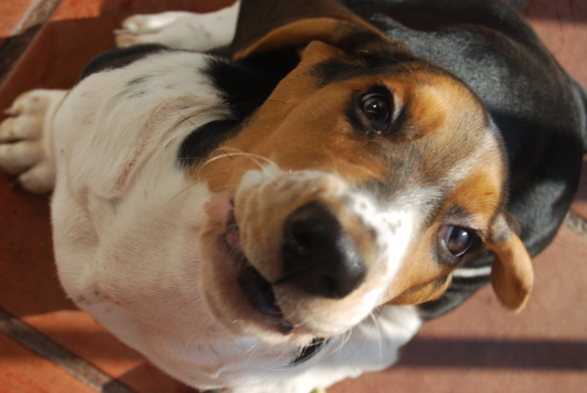

Sherlock, The Basset Hound
Bringing joy to everyone's lives since 2010

During his 8 years he has played a lot, walked a lot, barked, jumped, stolen food items (and non-food items), but most of all he has brought smiles to a lot of people's faces!